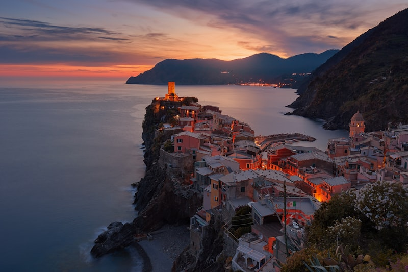

⏱ לה ספציה → כפר ראשון ברכבת: ~10–20 דק׳
צ׳ינקווה טרה
חמישה כפרי דייגים צבעוניים על צוקי ליגוריה — מורשת עולמית. מגיעים בעיקר ברכבת מלה ספציה. הכפרים קטנים ותלולים (מדרגות).
כרטיס יומי Cinque Terre / רכבות תכופות.